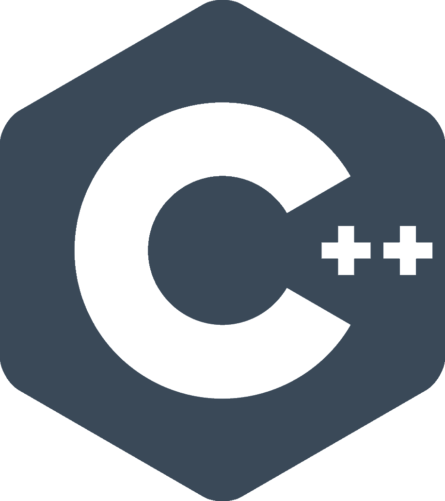
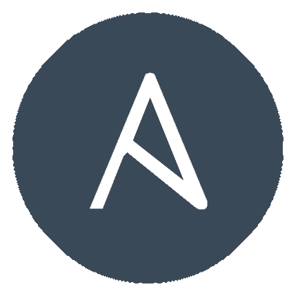
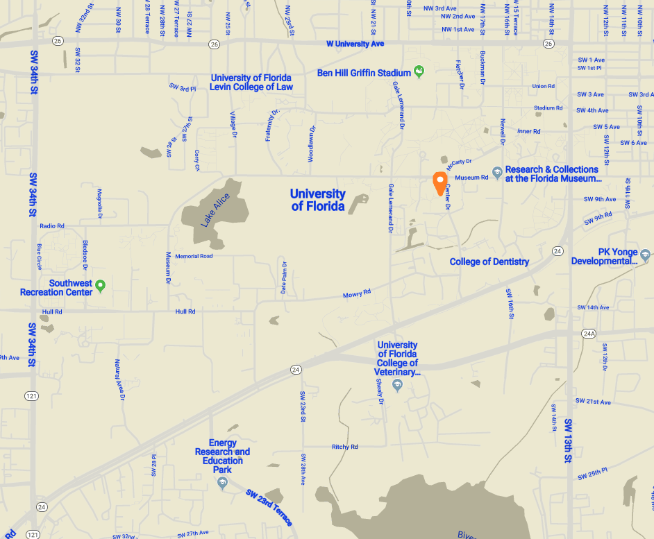

The Enjoyneer. Graduate from Clemson University with a degree in Computer Engineering. Current PhD student at the University of Florida.
Major Skills
Basic Qualifications
Programming Languages Proficiency
Fully proficient in the following programming languages:
C
 C++
Java
HTML
CSS
Javascript
Experience with Languages
Proficient experience in the following languages or applications:
Jenkins
Angular
Bootstrap
Python
Linux Shell
Bash Scripting
 Ansible
MySQL
Sparql
VHDL
Microsoft Office, Enterprise Tools, and Documentation
Fully proficient in all tools in the Microsoft Office suite as well as MathWorks MATLAB and Simulink.
As well as a proficient skill in technical writing and documentation.
Advanced Skills and Specialties
Advanced Knowledge of Programming Languages
Of the programming languages listed above, I have advanced knowledge, understanding, and problem solving
skills in C, C++, and Java.
Knowledge of Advanced Topics
Proficient to advanced knowledge of the following topics:
Computer Architecture
Electrical Circuit Design and Analysis
Basic Electronic Device Design and Analysis
Complex Data Structures and Algorithms in C and C++
Microcontroller Interfacing and Programming (Specific experience with PIC32 and Raspberry Pi systems)
Basic Computer Networking Protocols, including TCP/UDP/IP
Computer Network Design and Analysis
Signals, Systems, Random Signal Analysis
Operating Systems Design for Embedded Devices and General Use Computing
Topics of Personal Specialization
In graduate school I will be focusing on a few specialized topics for my research.
The following topics are my chosen areas of specialization
IoT Networking Design and Efficiency
IoT Networking Security
Large Scale IoT Device Networking Applications
Autonomous Vehicle Network Design
General Network Security Protocol Design
Current Resume
Education
University of Florida
2019 - 2024
Currently pursuing my Master's Degree and a Doctorate of Philosophy in Computer Engineering and Network Design and Security.
Expected to receive my Master's Degree in 2021 followed by my Doctorate of Philosophy in 2024.
Clemson University
2015 - 2019
In May of 2019, I received my Bachelor's Degree in Computer Engineering with a minor in Cybersecurity.
Graduated with honors, summa cum laude, as well as I received the Faculty Scholarship Award for completing
my degree at Clemson University with a 4.0 cumulative GPA.
Work Experience
Boeing Commercial Airplanes
Model-Based Systems Engineering Intern/Developer
May 2019 - Current
Worked to create a Web Data Connector for Tableau Desktop and Tableau Server to connect to the Boeing MBSE group's
backend MMS database. As well as miscellaneous other development and software tasks. Mainly developed in HTML, CSS, Javascript,
and Typescript.
Clemson University
Undergraduate Researcher
May 2018 - Aug 2018
Undergraduate research assistant under Professor Yongqiang Wang, Ph.D. The research project delved into the viability
of GPS signal security through the comparison of individual measurable and predictable GPS signal values such as the Doppler value.
Nuage Networks from Nokia
Software DevOps Engineering Intern
June 2017 - Aug 2017
Intern with the SDN/SD-WAN company owned by Nokia. Tasks included, but were not limited to, overhaul and redesign of the
testing environment for the Metro Automation of Network Installation and Setup product, Jenkins environment testing,
development of programs/scripts specifically for dynamically creating VMs managed through OpenStack for testing,
as well as aiding in the ongoing evolution of the Metro product through continually testing new code for said Metro product.
Infrastructure Consulting and Engineering
Engineering Assistant/Intern
May 2016 - Aug 2016
Intern with the engineering firm, ICE. Tasks included, but were not limited to, maintenance of
specific project information in Microsoft Excel, aiding in checking calculations for the professional
structural engineers, and aiding in implementation of designs into Bentley Microstation.
Carolina Power Equipment
Mechanic's Assistant
Oct 2013 - Feb 2015
Served as a mechanic's assistant. Performed numerous and various tasks associated with
lawn care equipment maintenance.
Bodyshop Athletics/Topspin Swim and Racquet Club
Pro Shop Front Desk Attendant
Jan 2014 - Aug 2014
Worked in the tennis Pro Shop assisting customers and stringing racquets on weekends.
Contacts and References
Personal: christopherbrant2019@gmail.com
School: cdbrant@ufl.edu
Work: cbrant@enjoyneering.org
---
Cell: +1 (803) 767-9292
---
Home: 208 Kennebec Ct, Lexington, SC 29072
Office: 946 Center Dr, Gainesville, FL 32611
Office Location:

References
The Honorable Mac Toole
Representative from District 88
South Carolina House of Representatives
+1 (803) 755-6542
mtoole2@sc.rr.com
---
J. Preston Felkel, PE
Structural Engineer | SC Structures Group Manager
Infrastructure Consulting and Engineering
+1 (803) 201-9196
preston.felkel@ice-eng.com
---
Brian Castelli
Metro Team Lead/Software DevOps Engineer
Nuage Networks from Nokia
+1 (919) 538-2374
brian.castelli@nokia.com
---
Harlan Russell, PhD
Associate Professor of Electrical and Computer Engineering
Clemson University
+1 (864) 656-7214
harlanr@clemson.edu
---
Yongqiang Wang, PhD
Assistant Professor of Electrical and Computer Engineering